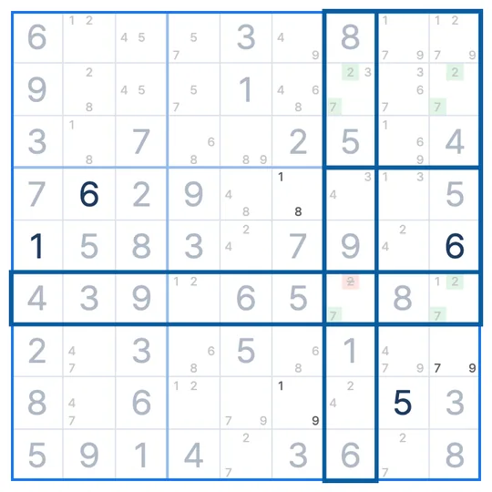

SUDOKU TECHNIQUE · Uniqueness
Hidden Unique Rectangle
Hidden Rectangle
A Hidden Unique Rectangle is four cells forming a rectangle on two digits, where one digit has only two candidates in the opposite corner's row and column. Because the puzzle has one answer, the other digit can be removed from that corner.
- Cells needed
- 2 rows × 2 columns over 2 boxes
- Links needed
- A digit with two candidates in a row and a column
- What to remove
- The other digit in the opposite corner
The Hidden Unique Rectangle pattern
Four cells where rows 1 and 2 meet columns 1 and 5, spread over boxes 1 and 2. R1C1 holds only 3 and 7. In the row (row 2) and column (column 5) of the opposite corner, R2C5, the 3 appears only in rectangle cells.
Why does this work?
Suppose R2C5 is 7.
The four cells would read 7, 3, 3, 7. Swapping 3 and 7 across them still follows the rules, so the puzzle would have two answers. A proper sudoku has only one, so R2C5 cannot be 7. Remove the 7.
How to find the Hidden Unique Rectangle
- Look for a rectangle on two rows, two columns and two boxes whose cells share two candidates, with one corner holding only those two.
- At the opposite corner, check whether one digit appears only in rectangle cells in that corner's row and column.
- If so, remove the other digit from the opposite corner.
Common questions
How is it different from a Unique Rectangle?
A unique rectangle looks only at the candidates in the cells. A hidden rectangle also uses strong links, a digit with two candidates in a row and a column, so it works even with many extra candidates.
Can I rely on the puzzle having one answer?
Every Sudoku League puzzle is built to have exactly one answer. On puzzles with several answers this technique does not apply.
What if the rectangle spans four boxes?
Then swapping the digits breaks the box rule and no second answer appears. It only works across two boxes.
Related techniques
IN THE SUDOKU LEAGUE APP
Stuck? A hint shows you the Hidden Unique Rectangle
When you are stuck, a hint marks the four rectangle cells, the strong links and the digit to remove. In Technique Practice you learn the Hidden Unique Rectangle on a real puzzle. The first board walks you through the pattern and the reason, and on the next one you find it yourself.
